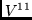
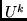
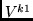
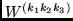
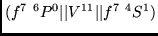
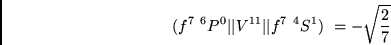

Next: Table 4. EXAMPLES RUN
Up: Examples
Previous: Case 2. Calculating the
In this section it is demonstrated how to calculate the reduced 
operator,
using the subroutine RWLS (see in Section 3.2), which calculates
the reduced matrix elements (35). For that purpose the relation
(16.34) from Rudzikas [14] is used. While using the  and 
tables, one must pay attention to various phase conventions used in the
literature.
In addition, small differences in the definitions of occur.
Some authors, Karazija et al [20] among them, tabulate the
submatrix elements
others, like Nielson and Koster [18] or Cowan [9], tabulate
although they use the notation of (47). Meanwhile, the relation
between these two coefficients is:
The submatrix elements are defined as (47) if we use the
relations between matrix elements of
 and as presented in the
Rudzikas monograph [14].
Reduced matrix elements of the operator
 are calculated in the
example.
The numerical value of this reduced matrix element
is taken from the Nielson and Koster [18] tables

and agree with our value.
Next: Table 4. EXAMPLES RUN
Up: Examples
Previous: Case 2. Calculating the
2001-12-07